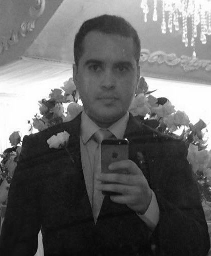

Graduando em Sistemas e Mídias Digitais na Universidade Federal do Ceará, 34 anos, nascido em Fortaleza-Ce.
Estudante das áreas de produtos multimídia, web e mobile, busco desenvolver projetos com os conhecimentos acadêmicos adquiridos bem como através de pesquisa, sempre acompanhando de perto as novas tendências tecnológicas para melhor elaboração do projeto final.
